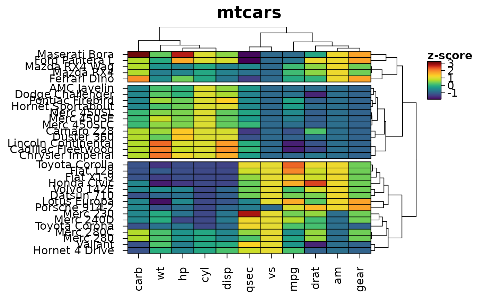

heat_map_describe() writes a description of a heatmap in plain
language - its size and scaling, what the colours show, the most extreme
values, how the rows and columns are clustered and what sets each cluster
apart, and any annotations, bars, labels or panels. Use it as alternative
text for people who use screen readers (e.g. the fig.alt chunk
option of R Markdown and Quarto), as a starting point for a figure legend,
or to check what a heatmap shows.
Arguments
- x
object of class
heat_mapreturned byheat_map.- digits
number of significant digits of the values, set to 3 by default.
- max_groups
the largest number of clusters to describe one by one, set to 8 by default. With more clusters only their sizes are given.
Value
a character string of class heat_map_description, printed
as wrapped text. Use as.character() for the plain string.
Details
Clusters are described by the columns (for row clusters) or rows (for column clusters) in which their mean is highest and lowest. Numbers are the values displayed in the heatmap, after any scaling.
Examples
hm <- heat_map(
mtcars,
scale = "zscore",
tree = "both",
tree_cut_y = 3,
legend_title = "z-score",
title = "mtcars",
popup = FALSE
)
#> Applying zscore scaling to each column...

heat_map_describe(hm)
#> Heatmap titled "mtcars" of 32 rows by 11 columns, converted to z-scores within
#> each column. Colours show z-score, from dark purple (-1.87) through yellow
#> green to dark red (3.21). The highest value is 3.21 (Maserati Bora, carb) and
#> the lowest is -1.87 (Ford Pantera L, qsec). Rows are ordered by hierarchical
#> clustering (euclidean distance, complete linkage). Rows are split into 3
#> groups, numbered from the bottom: group 1 (15 rows, e.g. Datsun 710 and Hornet
#> 4 Drive) is highest in vs and mpg and lowest in cyl and hp; group 2 (12 rows,
#> e.g. Hornet Sportabout and Duster 360) is highest in disp and cyl and lowest in
#> gear and drat; group 3 (5 rows, e.g. Mazda RX4 and Mazda RX4 Wag) is highest in
#> carb and gear and lowest in qsec and vs. Columns are ordered by hierarchical
#> clustering (euclidean distance, complete linkage).